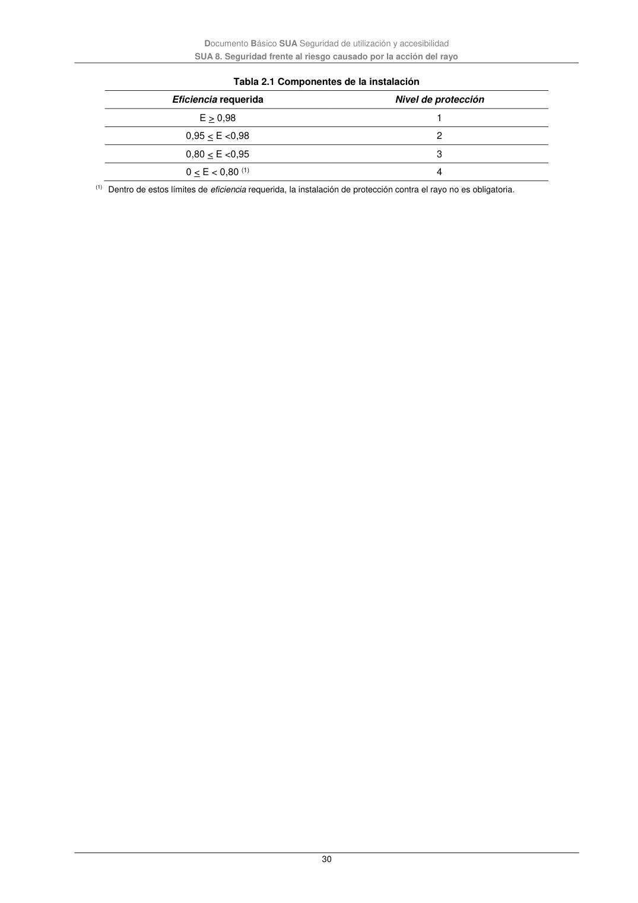

DB-SUA Seguridad de utilización y accesibilidad · edición 2022-06-14 · capa oficial
Documento DB-SUA-oficial · SHA-256 del PDF 3cfb5bbb135e8f02faebd8b844e03e8947994c18d4c9e675a7d2aa37d1cd5958
Página física 30 de 47.
Copia fiel del PDF fuente · Fuente oficial
Ficha de la disposición en la fuente oficial
Formato: Texto de la página (Markdown)
Documento Básico SUA Seguridad de utilización y accesibilidad SUA 8. Seguridad frente al riesgo causado por la acción del rayo 30 Tabla 2.1 Componentes de la instalación Eficiencia requerida Nivel de protección E > 0,98 1 0,95 < E <0,98 2 0,80 < E <0,95 3 0 < E < 0,80 (1) 4 (1) Dentro de estos límites de eficiencia requerida, la instalación de protección contra el rayo no es obligatoria.
